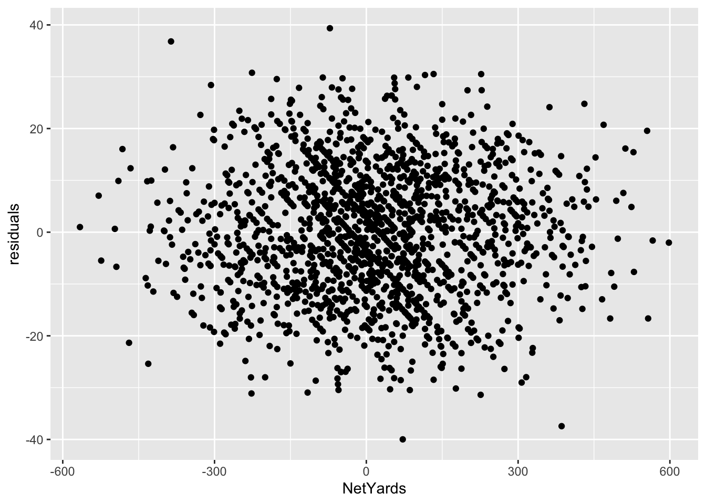
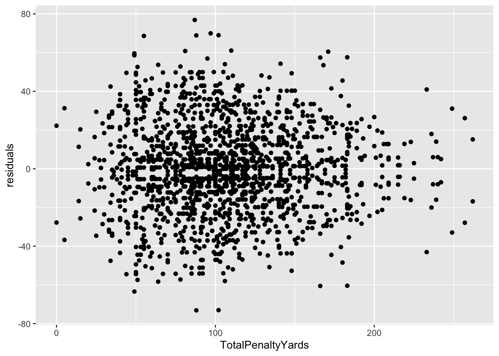
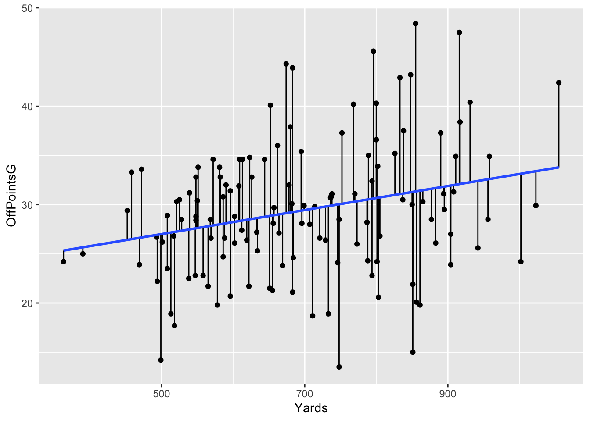

Chapter 11 Residuals
When looking at a linear model of your data, there’s a measure you need to be aware of called residuals. The residual is the distance between what the model predicted and what the real outcome is. Take our model at the end of the correlation and regression chapter. Our model predicted Nebraska, given a -40 net yardage deficit would lose to Iowa by -3.95 points. They lost by -3. So our residual is -.95. If Iowa fakes that last second field goal and scores a touchdown, our residual would have been -7.
Residuals can tell you several things, but most important is if a linear model the right model for your data. If the residuals appear to be random, then a linear model is appropriate. If they have a pattern, it means something else is going on in your data and a linear model isn’t appropriate.
Residuals can also tell you who is underperforming and overperforming the model. And the more robust the model – the better your r-squared value is – the more meaningful that label of under or overperforming is.
Let’s go back to our net yards model.
Let’s first attach libraries and get some data.
## Parsed with column specification:
## cols(
## .default = col_double(),
## Date = col_date(format = ""),
## HomeAway = col_character(),
## Opponent = col_character(),
## Result = col_character(),
## TeamFull = col_character(),
## TeamURL = col_character(),
## Outcome = col_character(),
## Team = col_character(),
## Conference = col_character()
## )## See spec(...) for full column specifications.First, let’s make the columns we’ll need.
residualmodel <- logs %>% mutate(differential = TeamScore - OpponentScore, NetYards = OffensiveYards - DefYards)Now let’s create our model.
##
## Call:
## lm(formula = differential ~ NetYards, data = residualmodel)
##
## Residuals:
## Min 1Q Median 3Q Max
## -39.981 -8.566 0.171 8.832 39.361
##
## Coefficients:
## Estimate Std. Error t value Pr(>|t|)
## (Intercept) 0.309946 0.302520 1.025 0.306
## NetYards 0.106536 0.001623 65.644 <2e-16 ***
## ---
## Signif. codes: 0 '***' 0.001 '**' 0.01 '*' 0.05 '.' 0.1 ' ' 1
##
## Residual standard error: 12.29 on 1660 degrees of freedom
## Multiple R-squared: 0.7219, Adjusted R-squared: 0.7217
## F-statistic: 4309 on 1 and 1660 DF, p-value: < 2.2e-16We’ve seen this output before, but let’s review because if you are using scatterplots to make a point, you should do this. First, note the Min and Max residual at the top. A team has underperformed the model by 39 points (!), and a team has overperformed it by 39 points (!!). The median residual, where half are above and half are below, is just slightly above the fit line. Close here is good.
Next: Look at the Adjusted R-squared value. What that says is that 72 percent of a team’s scoring output can be predicted by their net yards.
Last: Look at the p-value. We are looking for a p-value smaller than .05. At .05, we can say that our correlation didn’t happen at random. And, in this case, it REALLY didn’t happen at random. But if you know a little bit about football, it doesn’t surprise you that the more you outgain your opponent, the more you win by. It’s an intuitive result.
What we want to do now is look at those residuals. We want to add them to our individual game records. We can do that by creating two new fields – predicted and residuals – to our dataframe like this:
Now we can sort our data by those residuals. Sorting in descending order gives us the games where teams overperformed the model. To make it easier to read, I’m going to use select to give us just the columns we need to see.
## # A tibble: 1,662 x 5
## Team Opponent Result NetYards residuals
## <chr> <chr> <chr> <dbl> <dbl>
## 1 Penn State Buffalo W (45-13) -72 39.4
## 2 Illinois Nebraska L (38-42) -386 36.8
## 3 Virginia Tech Miami (FL) W (42-35) -226 30.8
## 4 Tennessee Chattanooga W (45-0) 133 30.5
## 5 Baylor Kansas W (61-6) 227 30.5
## 6 Syracuse Duke W (49-6) 116 30.3
## 7 Houston North Texas W (46-25) -86 29.9
## 8 South Florida South Carolina State W (55-16) 83 29.8
## 9 Troy Texas State W (63-27) 55 29.8
## 10 Miami (FL) Louisville W (52-27) -47 29.7
## # … with 1,652 more rowsSo looking at this table, what you see here are the teams who scored more than their net yards would indicate. One of them should jump off the page at you.
Remember Nebraska vs Illinois? We came back to win and everyone was happy and relieved at the same time? We outgained Illinois by 386 yards in that game and won by 4. Our model predicted Nebraska should have won that game by 36.8 points. Illinois outscored the model by almost as many points as they had. Just goes to show you: you can have all the advantages and you can still screw it up. Just ask Buffalo: They were only outgained by Penn State by 70 yards and still lost by 32.
But, before we can bestow any validity on this model, we need to see if this linear model is appropriate. We’ve done that some looking at our p-values and R-squared values. But one more check is to look at the residuals themselves. We do that by plotting the residuals with the predictor. We’ll get into plotting soon, but for now just seeing it is enough.

The lack of a shape here – the seemingly random nature – is a good sign that a linear model works for our data. If there was a pattern, that would indicate something else was going on in our data and we needed a different model.
Another way to view your residuals is by connecting the predicted value with the actual value.
## `geom_smooth()` using formula 'y ~ x'
The blue line here separates underperformers from overperformers.
11.1 Penalties
Now let’s look at it where it doesn’t work: Penalties.
penalties <- logs %>%
mutate(
differential = TeamScore - OpponentScore,
TotalPenalties = Penalties+DefPenalties,
TotalPenaltyYards = PenaltyYds+DefPenaltyYds
)##
## Call:
## lm(formula = differential ~ TotalPenaltyYards, data = penalties)
##
## Residuals:
## Min 1Q Median 3Q Max
## -73.13 -15.16 0.71 15.61 76.86
##
## Coefficients:
## Estimate Std. Error t value Pr(>|t|)
## (Intercept) 2.785946 1.525993 1.826 0.0681 .
## TotalPenaltyYards -0.007407 0.013244 -0.559 0.5760
## ---
## Signif. codes: 0 '***' 0.001 '**' 0.01 '*' 0.05 '.' 0.1 ' ' 1
##
## Residual standard error: 23.3 on 1660 degrees of freedom
## Multiple R-squared: 0.0001884, Adjusted R-squared: -0.0004139
## F-statistic: 0.3128 on 1 and 1660 DF, p-value: 0.576So from top to bottom:
- Our min and max go from -73 to positive 77
- Our adjusted R-squared is … -0.0004139. Not much at all.
- Our p-value is … 0.576, which is more than than .05.
So what we can say about this model is that it’s statistically insignificant and utterly meaningless. Normally, we’d stop right here – why bother going forward with a predictive model that isn’t predictive? But let’s do it anyway.
penalties %>% arrange(desc(residuals)) %>% select(Team, Opponent, Result, TotalPenaltyYards, residuals)## # A tibble: 1,662 x 5
## Team Opponent Result TotalPenaltyYards residuals
## <chr> <chr> <chr> <dbl> <dbl>
## 1 Maryland Howard W (79-0) 87 76.9
## 2 Penn State Idaho W (79-7) 97 69.9
## 3 Ohio State Miami (OH) W (76-5) 102 69.0
## 4 Oregon Nevada W (77-6) 88 68.9
## 5 Louisiana Texas Southern W (77-6) 55 68.6
## 6 Miami (FL) Bethune-Cookman W (63-0) 110 61.0
## 7 Alabama Western Carolina W (66-3) 81 60.8
## 8 UCF Florida A&M W (62-0) 171 60.5
## 9 South Carolina Charleston Southern W (72-10) 49 59.6
## 10 Wisconsin Central Michigan W (61-0) 49 58.6
## # … with 1,652 more rowsFirst, note all of the biggest misses here are all blowout games. The worst game of the season last year was, by far, Maryland vs Howard, a 79-0 shellacking that should never have happened. The differential was 79 points. The model missed that differential by … 76.9 points. In other words, this model is terrible. But let’s look at it anyway.

Well … it actually says that a linear model is appropriate. Which an important lesson – just because your residual plot says a linear model works here, that doesn’t say your linear model is good. There are other measures for that, and you need to use them.
Here’s the segment plot of residuals – you’ll see some really long lines. That’s a bad sign. Another bad sign? A flat fit line. It means there’s no relationship between these two things. Which we already know.
## `geom_smooth()` using formula 'y ~ x'